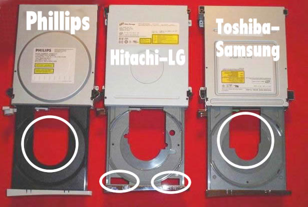
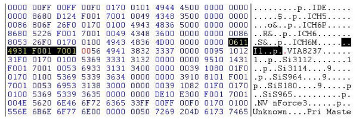

XBOX
360 DVD DRIVE HACKING
WHICH DRIVE TO YOU HAVE:

MEMORY DUMPS:
These ATAPI commands are being exchanged between 360 and its drive,
without a disc being in the 360's drive:
1200 0000 24c0 0000 0000 0000
5500 0000 0000 0000 3a00 0000
0300 0000 1200 0000 0000 0000
5500 0000 0000 0000 3a00 0000
5a00 3b00 0000 0000 3a00 0000
0000 0000 0000 0000 0000 0000
0300 0000 1200 0000 0000 0000
0000 0000 0000 0000 0000 0000
0300 0000 1200 0000 0000 0000
0000 0000 0000 0000 0000 0000
0300 0000 1200 0000 0000 0000
0000 0000 0000 0000 0000 0000
0300 0000 1200 0000 0000 0000
0000 0000 0000 0000 0000 0000
0300 0000 1200 0000 0000 0000
0000 0000 0000 0000 0000 0000
0300 0000 1200 0000 0000 0000
0000 0000 0000 0000 0000 0000
0300 0000 1200 0000 0000 0000
0000 0000 0000 0000 0000 0000
0300 0000 1200 0000 0000 0000
0000 0000 0000 0000 0000 0000
You'll see 55= mode select, 5a = mode sense, 03 = request sense, 12 =
inquiry
The data itself was not completely correct (was some data missing) and
besides, it all seems to be encrypted.
MORE:
1200 0000 24c0 0000 0000 0000
5500 0000 0000 0000 3a00 0000
0300 0000 1200 0000 0000 0000
5500 0000 0000 0000 3a00 0000
5a00 3b00 0000 0000 3a00 0000
This is the interesting part. First mode select returns 'ERR'. Second
mode select probably sends a random data block to the drive to encrypt.
Drive encrypts this block, sends it back to the xbox, via mode sense
(page code 3B), xbox checks if the block was correctly encrypted. If
so, it knows that the drive has the same key as the xbox has. Then it
starts looping 03/00 commands to see if a disc is inserted. This will
keep looping till a disc is inserted. If a disc is inserted, xbox sends
a mode sense with pagecode 3E (= authentication) and will start the
authentication process, pretty much the same as we saw in the original
xbox.
Three methods of
getting the DVD-drive recognized by your PC
We
need to tell the DVD-drive to enter a mode known as 'Mode B' or the PC
will not be able to see the drive and we need the PC to see it before
we can do any firmware updates. Three methods are available to
accomplish the task, choose your method and read how it's done.
- Slax CD if your SATA chipset is compatible (click HERE to check
known compatibility)
Click Here for
instructions (If link is down - sorry, can't correct)
- Crossed Wires Method requires adding some wires to the DVD-drive
Click Here for
instructions (If link is down - sorry, can't correct)
- Xecuter Connectivity Kit needs to be purchased for around $30
online
Click Here for
instructions (If link is down - sorry, can's correct)
My DVD-Drive has been sucessfully flashed
now what?
We
need to obtain the sector sectors of the Xbox title we wish to create a
back-up for. Only the Toshiba-Samsung DVD-drives are currently able to
perform this function. and it requires flashing a different firmware to
the drive to enable this particular function to work. users with the
other drive types will have no choice to obtain .iso images that are
'Xtreme' firmware ready meaning the security sectors have been injected
correctly into the back-up by someone else. You can also find the
current sectors for most games available as a download if you look
around. Remember the Xbox 360 requires you use the correct version so
if you have a NTSC Xbox look for a NTSC version and of course PAL users
need a PAL version.
For users who wish to read the
security sectors for now you'll have to look around for instructions.
Try these resources:
Known SATA Chipset Compatibility and Issues:
If your Chipset
is listed as Compatible you ready to to continue if your
chipset is not present or marked with Does not work your better to stop now.
Note: This list was mostly
complied using the Samsung DVD-drive so it
mat not be completely compatible when using the Hitachi or Phillips
DVD-drive.
PCI SATA:
- Sil3112 Chipset Does not work
- Sil3114 Does not work
- Sil3512 Does not work
- Maxtor SATA card w Promise chipset Does
not work
- VIA VT 8237 Compatible
Onboard
SATA:
- MSI k7n2 delta (Promise SATA) - Does not
work
- Abit NF7-S2G Nnforce2 SATA (mapped as IDE ports 3+4) - Compatible
- VIA Chipset - Compatible
- Intel Chipset (ICH5 / ICH6) Compatible
- ASUS P5AD2 premium (with ICH6) - Compatible
- Promise Sata controller on the ASUS P4C800E-Deluxe - Compatible
- Other chipsets are hit and miss but compatibility is being added
whenever possible
SATA NOTES:
- Flash program must have the Xbox 360 Drive on a SATA channel, not
an ide
channel so don't use any SATA-to-IDE converters.
- The Flash program cannot flash via a USB or Firewire connection
- The Flash program (so far) has the following SATA chipsets
supported
- ICH5, ICH6P, ICH6, ICH6M
- VIA8237,
- Sil114
- SiS964, SiS180, SiS965
- NV nForce3
- Make sure your SATA ports are set to NATIVE/IDE mode NOT RAID in
the motherboard bios
- Windows
XP sometimes will detect the drive and it will appear in device
manager, but no drive letter would be assigned. To assign one I had to
do the following steps:
- device manager >
- DVD/CDROM drives >
- Right click on HL-DT-ST DVD-ROM GDR3120L SCSI CdRom Device
>
- Properties >
- Volumes tab >
- Populate >
- OK
Editing
MTKFlash to Work With Your SATA Chipset:
(Advanced users only don't attempt if you don't understand it)
You will need:
- Hexworkshop (Click Here)
and install it on your PC
- PCI SATA Controller Card or an Onboard SATA Controller
- Finding
out What SATA Chipset You Have
If you have a SATA Controller Card it should say on the Box, In the
Manual or on The
Chip itself, If you have a Onboard SATA Controller then check your
mobo/Computer Manufacturers Website
Example:
Onboard: VIA KM400 / 8237 = VIA 8237 SATA Chipset
SATA Controller Card: VIA 6421
- Finding
The Correct Values
You will need to Open up MSInfo32.exe
Start>Run, Type 'MSinfo32.exe'
with MSinfo open Click the + next to 'Components', Click the + next to
'Storage' Now Click on SCSI You Should See Something That looks Like
This:
Name Serial ATA Controller
Manufacturer
Status OK
PNP Device ID
PCI\VEN_2211&DEV_4433&SUBSYS_31491106&REV_80\3&61AAA01&0&78
I/O Port 0x00006655-0x00006662
I/O Port 0x00000000-0x00000003
I/O Port 0x00008877-0x00008884
I/O Port 0x00000000-0x00000003
I/O Port 0x00000000-0x0000000F
I/O Port 0x00000000-0x000000FF
IRQ Channel IRQ 20
Driver c:\windows\system32\drivers\driver.sys (5.1.2600.201, 74.63 KB
(76,416 bytes),
5/15/2006 7:00 AM)
All of that Should Look Different in Your Info, Next to Name it Should
Say Something
About 'Serial ATA' if it Doesn't Try Scrolling Down and/or Make Sure
Your in the
Right Place. What You Are looking For in This is 8bytes (16
Numbers/Letters) That MTKFlash Can Identify Your Chipset with, The
First 4bytes are Found in The 'PNP Device ID'
(2 Numbers/Letters = one byte)
PNP Device ID
PCI\VEN_2211&DEV_4433&SUBSYS_31491106&REV_80\3&61AAA01&0&78
So From This Example Your Line So Far Should be 11223344
The Next 4Bytes are Found in 2 Different Lines of 'I/O Port' Hex
Values, You Want to Identify The 2 Lines That Have a 7Byte Difference,
Extract the Last 4 Digits of the First Section of Numbers/Letters from
Them and Swap the 2 Bytes (As You did with The 'PNP Device ID' Line)
I/O Port 0x00006655-0x00006662
I/O Port 0x00008877-0x00008884
This is Only Known to Work if You Use The 2 'I/O Port' lines With a
Difference of 7 in order (as Shown Above), As They are Values for The
Primary Master and Slave SATA Device, So in this Example Your line
Should be 55667788 Put Together The 4bytes of Hex (8 Numbers/Letters)
That You Have From The 'PNP Device ID' Line and the 4 You have from The
'I/O Port' Lines and You Have The Values You Need to Insert in to Your
MTKFlash.exe File.
- Now Open up MTKFlash.exe
in Your Hex Editor (Hex Workshop: Right Click on the file and Click 'Hex Edit using Hex
Workshop'), Your Hex Editor Should have a Goto Function (Hex Workshop: Ctrl+g).
Open it and put in B370 in Hex, Make
Sure You have it 'Start at the Beginning' of the file, Once here you
should See in the Text part, The Names of ChipSets ICH5,VIA8237,NV
NForce3,etc. If Your Chipset is in Here that's Good You can compare the
Actual Hex Value's to the ones "On File" and if There not the Same
Change What you Need to, The Info for a Chipset is 1byte (2 00's(In
Hex) Before the Name of That Chipset (in TXT), If Your Chipset is Not
Here You Can Just Edit one That is (I do Not Recommend Creating a New
one), For Example Say I Have a VIA8237 Chipset These are The Values
That I Would Edit (Don't Edit the 00 in RED) see photo below:
